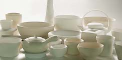
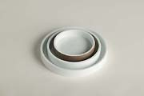
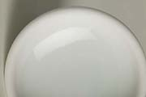
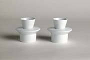
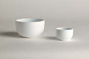
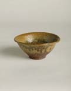
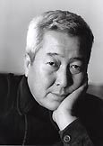
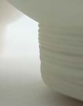
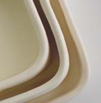
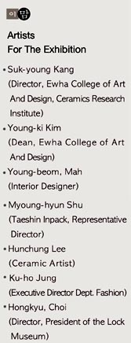

| E-MOMM - The Development
of Contemporary Tableware in Korea
A Collaborative Project to Develop a Tableware Brand Appropriate
for the Korean Life Style and Diet, including an exhibition organized
by the Ewha
Ceramics Research Institute at Ewha
Womans University, Seoul, Korea.

The Objective of Organizing the Emomm Exhibition
The past twenty years has seen a considerable change in the ceramic
tendency within the contemporary ceramic movement of Korea. Although
the Korean tradition and custom is deeply rooted in the Korean mentality,
most people today have been influenced by the abundance of imported
utility wares found in our current ceramic market. In general, most
Korean people possess at least one type of traditional ceramic ware
– be it a celadon, buncheong, onggi jar, white ware. Yet despite
such phenomenon, more and more people are turning their eyes towards
purchasing imported ceramics in the likes of Royal Doulton, Wedgwood,
Rosenthal or Royal Copenhagen. The last ten years has seen an increase
in preference towards such imported ceramics.
The basis of the Korean culture is still dominated largely by
Confucian philosophy, which began in the Joseon Period (late 14th
century – early 20th century). Even today many of the rites
that we practice daily descend from Confucianism and neo-Confucian
mentality. Therefore our customs root back to the past and much
of it has been preserved in our current life style. The Korean people
rely more on the Lunar Calendar and many of our major national holidays
coincide with the 12 Solar Systems of this calendar.
When we examine the life style of the Korean people today, it
is evident that many of the ceramic wares appear to be inappropriate
for our inherent habits. This applies to both imported ceramic wares
and those that are made nationally by our own companies. Until now
there has not been a production line that best accommodate our custom
and daily diet.

Consequently, the professors of the Ewha
College of Art and Design, renowned national designers and
ceramic artists have gathered together at the Ewha Womans University’s
Ceramics Research Institute to design a contemporary tableware that
is most apt for our customs with reference to the modern transitions
in life style. Furthermore, the initiative commemorates the 46th
anniversary of the Ewha Ceramics Research Institute, the pioneer
of contemporary ceramics movement in Korea and also the leader of
ceramics as an academic subject in universities.
With the leading specialists in design and crafts, the Ewha Ceramics
Research Institute has planed an exhibition on ceramic tableware.
It is an attempt to redefine the contemporary Korean table setting
with the different ceramic wares designed by the Ewha Ceramics Research
Institute as a glimpse into the contemporary tendency and preference.
The exhibition has been titled E-MOMM after Ewha Womans University's
E and MOMM meaning spirit and embracement. From ancient times, the
Koreans believed that the spirit has been vesseled by our physical
body. Therefore to accommodate both the importance of Ewha Womans
University and the spirit of craftsmanship, the exhibition has been
titled E-MOMM. This title is also used as the Brand Identity for
the ceramic wares on display in the exhibition. The brand name integrates
the current social tendency simultaneously as representing the Korean
mentality in crafts.
Like a mother preparing a hearty meal for her family, the maternal
spirit and mentality has been vesseled in all of the objects on
display for the E-MOMM exhibition.

The Role of the Ewha Ceramics Research Institute
|  |
The Ewha Ceramics Research Institute was the first to be established
within an academic environment along with its ceramic art department.
It was founded in 1958 and this year marks its 46th anniversary.
It began as an organization researching on methods to modernize
traditional wares of Korea. Its founder, Hwang, Jong Gu came
from a long line of ceramic tradition and he is looked upon
as the father of contemporary Korean ceramics. His achievements
are highly praised as he attempted to start the contemporary
ceramics movement during a period when any cultural preservation
was bleak in Korea. He pushed to develop the existing traditional
wares a step further for modern appeal. |
|  |
Today the director of the Ewha Ceramics Research
Institute, Kang Suk Young, is an artist who is referred
to as the pioneer of the slip-casting movement in Korean contemporary
ceramics. With specialists such as Professor Kang, Ewha continues
to be in the forefront of introducing new ideas and creative
expressions in contemporary Korean Ceramics.
Professor Kang hopes that the Emomm exhibition will contribute
to the development of current contemporary ceramics while
influencing Korea’s tableware. |
The Concept behind the Emomm Exhibition
Emomm
is a collaborative initiation to redefine the existing tableware
of Korea. The subject for the exhibition is based on Korea’s
12 main Solar Seasons. Our national holidays are connected to these
Solar Seasons and they usually announce seasonal changes in the
weather. In general, many of the Korean custom, is closely tied
to these 12 main seasons and they are usually about paying respect
to ancestors, evil spirits, maintaining an opulent life, good health
and fortune. Furthermore, special dishes and foods are eaten on
national occasions, which are often celebrated with formal rites.
For instance a year begins by celebrating the Lunar New Year’s
Day and on this day we eat a soup dish with rice cakes in addition
to specially made desserts. Each dish is served on a particular
type of ceramic ware as they have different significance, color
and taste. These aspects of the Korean diet and food serving, has
been taken into consideration in the designs for the Emomm Exhibition.
Spring
is welcomed by serving different herbal dishes as they act as medicines
to preserve the health so that the body is able to prepare itself
for the hot season to come. Even the herbs and vegetables have different
significances. Some are said to heal the body and some for boosting
certain organs.
In Korea it is important to pay respect to the deceased ancestors
as they protect the family descendents from evil spirits while bringing
good fortune. Subsequently, respect is paid by laying a table filled
with delicious food, on specific ceramic wares for the spirit to
return and enjoy some of their favorite dishes.
The Korean way of life is closely related to such rites and practices.
Therefore it is necessary to design ceramic wares that can serve
the rites properly.
The Significance of the Emomm Exhibition for the Development
of Korean Contemporary Ceramics
Korea
possesses a remarkable ceramic history and culture that is more
than 5 000 years old. It is renowned for its own celadon, buncheong
and white wares. Yet despite the nation's rich historical inheritance,
most of its people are unaware of its cultural value. There is a
lack of national support given to the preservation and the development
of contemporary ceramics. The Japanese Colonization severed Korea's
ceramic tradition leaving the nation in loss of its own identity.
This was further aggravated by the intervention of foreign troops
and the Korean War. Therefore, it is not until the 1980's that Korea
began to raise the standard of its overall lifestyle and to begin
concentrating on the preservation of its culture. The 1980's saw
a sudden acceleration in Korea's economy but this continued to affect
the Korean culture as it underwent many radical transitions. Consequently,
the advancement from Korea's fundamental ceramic wares has been
considerably difficult. Until now there has not been a contemporary
substitute that is able to best represent Korea’s rich tradition
simultaneously as possessing a universal appeal that can contribute
to Korea's ceramic development.
Today, the social tendency is to integrate cultures. It is an era
where styles are crossing over and where cultures are being shared
to understand one another. In art, there have already been attempts
to move away from existing principles and genres. Instead of following
any one concept, art is crossing boundaries taking on a more interdisciplinary
form. The same phenomenon is making a mark in culture and economy
in search of a brand that can accommodate the contemporary trend.
The Emomm exhibition is an initiative to create a variation of
ceramic tableware that relate to tradition simultaneously as making
an advancement by fulfilling the requirements of modern life. Furthermore
it hopes to contribute to the development of contemporary Korean
ceramics.
The EMOMM exhibition will be on view at the EWHA Art
Center, EWHA Woman's University, 11-1 Daehyun-Dong, Soedaemun-Gu,
Seoul, from the 9th of May 2005.
More Articles
|
{kind=link}
{kind=link}
{kind=link}
{kind=link}
{kind=link}
{kind=link}
{kind=link}
{kind=link}